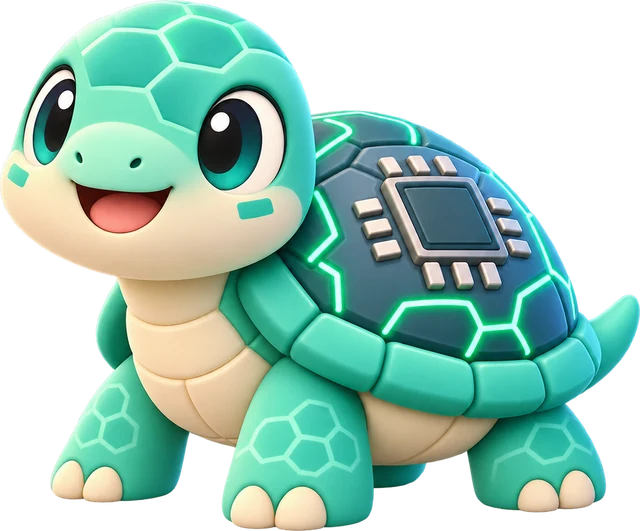
世界觀
| 遊戲裡 | 是什麼 |
|---|---|
| 冒險者 | 玩家。每人開局有 100 萬金幣。 |
| 公會 | 發委託、付委託金的地方。 |
| 怪獸 | 共 10 隻，每隻有自己的脾氣。一次最多帶 3 隻出發。 |
| 體力 | 怪獸現在的狀態。出發時一律 100%，冒險途中會上下變動，也可能超過 100%。 |
| 脾氣 | 體力起伏有多大。脾氣越大，可能衝很高，也可能一下掉很多。 |
| 排名 | 看誰手上的金幣增加最多。 |
10 隻怪獸
脾氣星星越多，體力起伏越大：可能衝很高，也可能一下掉很多。
晶殼龜
★★★★★背上的晶片殼越長越厚
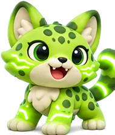
綠光豹
★★★★★跑起來會發出綠光
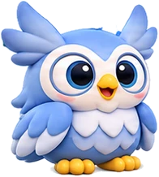
搜尋鴞
★★★★★大眼睛什麼都找得到
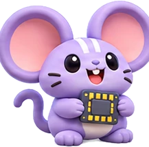
記憶鼠
★★★★★把每件事都記在耳朵裡
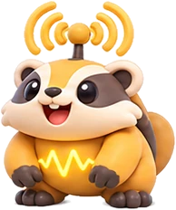
天線獾
★★★★★頭上天線收得到所有訊號
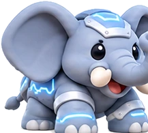
老鐵象
★★★★★個子大，心情起伏也大
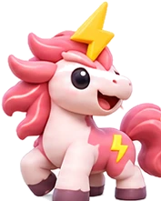
雷角馬
★★★★★閃電角一充飽就暴衝
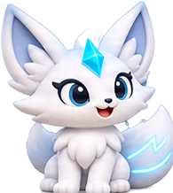
先知狐
★★★★★額頭寶石看得見未來（嗎？）
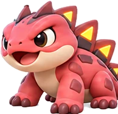
紅芯蜥
★★★★★背上的尖刺是一排排晶片
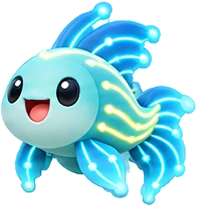
光纖魚
★★★★★在光纖裡游得飛快
一局 6 個月，每個月這樣進行
公會快報
突發事件，例如「雷角馬遇到暴風雨，體力 −15%」。只有第 2、3、5、6 個月有。
主持人：選怪獸、觸發事件接任務
大家用 2 分鐘決定這個月接什麼任務，或在營地休息。最後 10 秒會提醒。
主持人：開始倒數冒險
怪獸的體力上上下下，大家一起看結果。
主持人：推進並結算月底檢查
看哪些任務完成，公布排名。
主持人：進入下個月
接任務的三個步驟
組隊：挑 1～3 隻怪獸
任務結束時，體力最低的那隻決定任務成不成功。隊伍越多隻，越可能有一隻撐不住。
決定要求的體力（50%～95%）
公會的委託單上會寫：
任務結束那天，每隻怪獸的體力都要在 80% 以上。
要求越高，任務越難，委託金越多。
決定帶多少金幣出發
一次 1 萬起跳，最多帶全部。也可以選「在營地休息」，這個月金幣不增也不減。
一個任務是 2 個月；第 6 個月剩下的時間不夠，只能接 1 個月的任務。
任務的三種結果
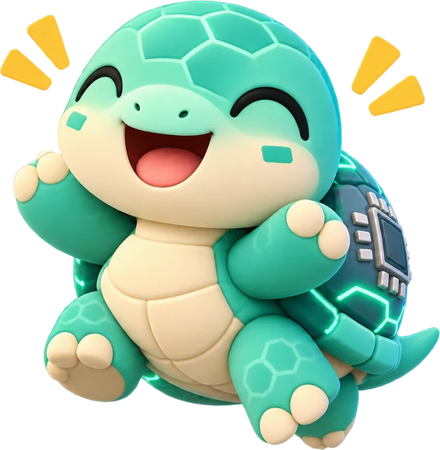
任務提早完成
某個月底，全隊體力都在 100% 以上。
本錢全部拿回 ＋ 已經過的月份的委託金
任務完成
結束那天，最弱的那隻也達到要求。
本錢全部拿回 ＋ 全部委託金
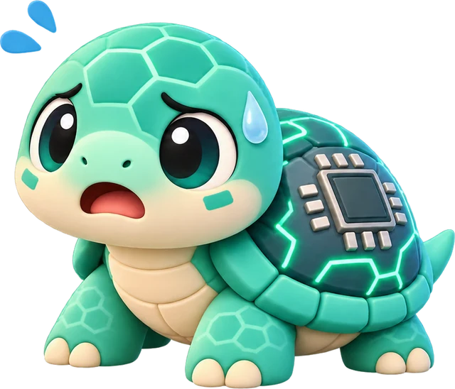
帶回家休養
結束那天，最弱的那隻沒達到要求。
本錢換成那隻怪獸 ＋ 全部委託金
只在終點那天檢查要求。中途體力掉到要求以下，只要結束前爬回來，任務還是成功。這點要跟小朋友講清楚，因為一般遊戲的血條是一掉到底就出局。
帶回家休養的怪獸，之後每個月可以決定送走（換回金幣），或繼續養（等牠恢復體力，但也可能更累）。休養期限到了會自動送走，送走後的下一個月一定要接任務。
體力和金幣怎麼連起來
委託金：穩穩拿到的報酬
公會付錢，是因為你幫它扛了「怪獸累倒」的風險。任務越可能失敗，委託金越多：
- 要求的體力越高
- 怪獸脾氣越大
- 隊伍越多隻
委託金每個月都發，任務失敗也照拿。
本錢：真正的風險
任務成功，帶出去的金幣全部拿回。
任務失敗，換回一隻怪獸，牠的身價照終點體力計算，通常比帶出去的少。
怪獸身價 ＝ 帶出去的金幣 × 終點體力 ÷ 要求的體力
最後拿到的 ＝ 本錢（或怪獸身價）＋ 委託金。跟出發時帶的金幣相比，就是這次賺或賠多少。
一個完整的例子
小明家帶 100 萬出發，隊伍是晶殼龜和雷角馬。三種要求的比較（數字為示意）：
| 要求的體力 | 每月委託金 | 接 10 次，大約幾次帶回家休養 |
|---|---|---|
| 70%（簡單） | 約 0.2 萬 | 不到 1 次 |
| 80%（困難） | 約 1.1 萬 | 約 2 次 |
| 90%（超困難） | 約 3.2 萬 | 約 5 次 |
他們選了 80%，可能的結果：
- 第 1 個月底兩隻都在 100% 以上 → 任務提早完成100 ＋ 1.1101.1 萬
- 終點時最弱的雷角馬還有 85% → 任務完成100 ＋ 2.2102.2 萬
- 終點時雷角馬只剩 60% → 帶牠回家休養100 × 60 ÷ 80 ＝ 75，再 ＋ 2.277.2 萬
委託金穩穩拿，但賺得不多；真正的風險是本錢可能一次少很多。
主持人口條
「今天每一家都是冒險者，手上有 100 萬金幣。公會有很多委託，要請大家帶怪獸去冒險。」
「委託單上會寫：任務結束那天，每隻怪獸的體力都要在幾 % 以上。要求越高越難，公會給的委託金就越多。」
「隊伍裡體力最低的那隻決定成敗。如果牠沒達到要求，就要把牠帶回家休養，牠的身價會比你帶出去的金幣少。」
「公會快報！雷角馬遇到暴風雨，體力下降 15%！已經在路上的隊伍也會受影響喔。」
「最後 10 秒！還沒決定的冒險者，快選一個任務，或回營地休息！」
「月底檢查！體力都在 100% 以上的隊伍提早完成任務，恭喜！」
給大人的對照：這其實是 FCN
| 遊戲裡 | FCN（固定配息債） |
|---|---|
| 公會 | 銀行（發行商） |
| 接任務 | 承作 FCN |
| 怪獸 | 連結標的 |
| 體力 | 股價 ÷ 期初價 |
| 脾氣 | 波動度 |
| 體力最低的那隻決定成敗 | Worst-of |
| 要求的體力 | 履約價 |
| 委託金 | 票息 |
| 任務提早完成 | 提前出場（KO，100%） |
| 任務完成 | 到期還本 |
| 帶回家休養 | 到期接股 |
| 送走／繼續養 | 賣出／續抱持股 |
| 在營地休息 | 保留現金 |